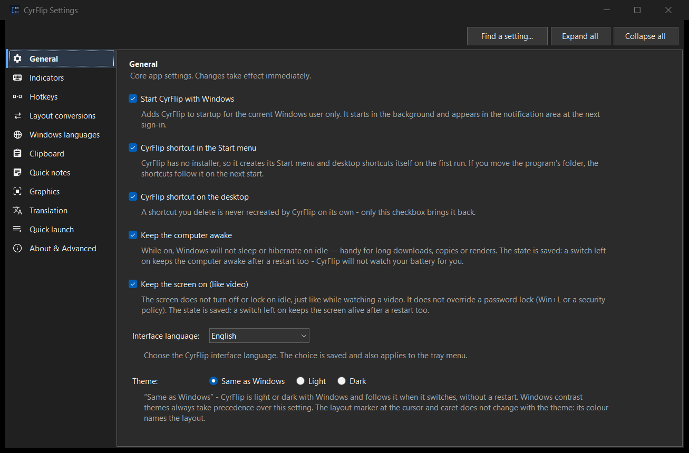
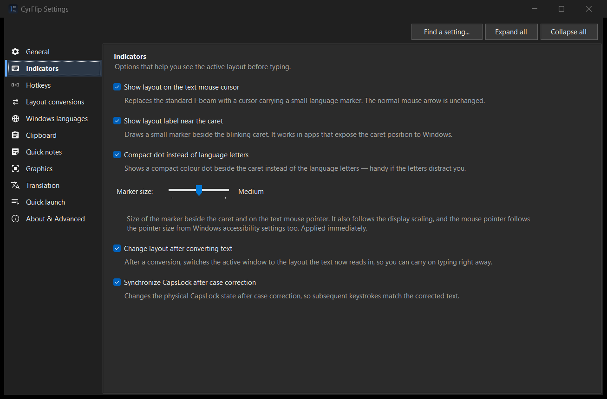
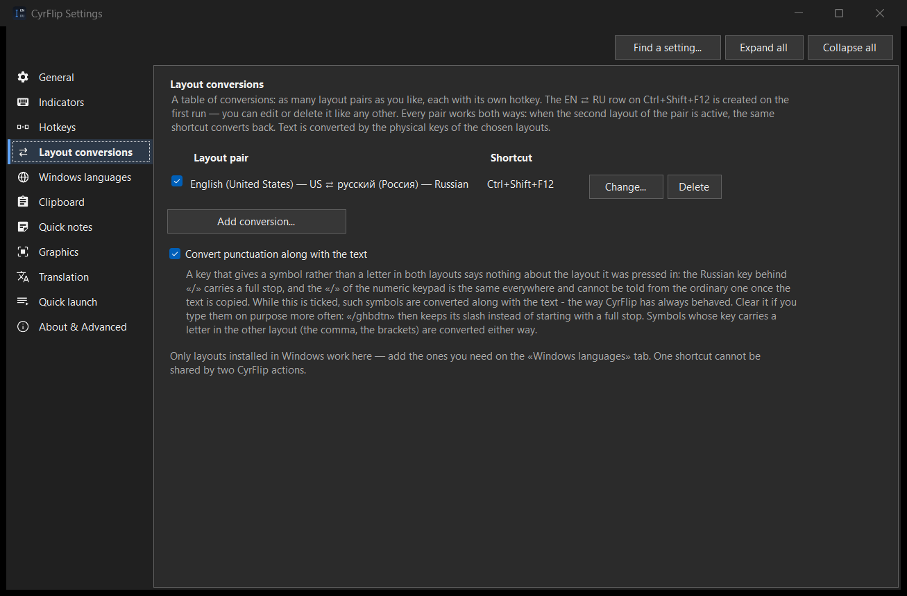

CyrFlip setup guide
CyrFlip is a tray toolkit for your keyboard and desktop. The CyrFlip desktop app works standalone - it puts the layout marker next to the text caret everywhere and fixes mistyped text with one hotkey, and its optional modules add a selection menu, a local translator, a symbols window, clipboard history, quick notes and quick launch. If you use VS Code, the optional VS Code extension adds the same marker precisely at the Monaco editor caret. Here's how to set them up.
Glossary
- Layout
- The mapping from physical keys to characters selected in Windows.
- Layout conversion
- Replacing selected text as though it had been typed with another installed layout.
- Case flip
- Changing uppercase letters to lowercase and lowercase to uppercase in selected text.
- CapsLock
- The keyboard state that makes letters uppercase; CyrFlip can show and synchronize it.
- Quick notes
- The optional local notepad in CyrFlip.
How the two pieces fit together
The app is the brain - it knows the active layout. The extension is just a display surface for VS Code, because VS Code draws its own caret and isn't keen on sharing its whereabouts with the outside world.
CyrFlip.exe (tray app) %LOCALAPPDATA%\CyrFlip\ VS Code extension
detects the layout ──writes──▶ layout.txt ──watches──▶ draws the marker
at the editor caretThe app must be running for the extension to show anything - the extension only reads what the app publishes. Without VS Code you still get the tray icon, the mouse-cursor marker, and the transliteration hotkey everywhere.
Step 1 - Install and run the CyrFlip app

Pick any option:
- Microsoft Store - search for CyrFlip in the Microsoft Store app on Windows 10/11 and click Get. What the Store build does differently.
- winget:
winget install SerZhyAle.CyrFlip - Portable ZIP - download from the
Releases page, extract it to a permanent folder, for example
%LOCALAPPDATA%\Programs\CyrFlip, and runCyrFlip.exe. Nothing to install; it runs on stock Windows 10/11. The ZIP is not code-signed, so Windows or an antivirus may warn - what the warning means and what to click.
On your first launch, a five-step welcome tour introduces CyrFlip and offers to open Settings on General for initial setup. Skip or close it to keep the defaults. Updates do not show it again; replay it from About. Start CyrFlip with Windows stays off until you choose it.
On launch, CyrFlip sits in the system tray (normally no window). The tray icon shows the active layout. Right-click it to show the clipboard-history strip, enable or pause history, change the indicator, or open Settings. Settings contains hotkeys, autostart, privacy controls and diagnostics.
Turn on Start CyrFlip with Windows so the app - and therefore the layout marker everywhere, including in VS Code - is always available after a reboot.
Step 2 - Install the VS Code extension (optional)

The VS Code extension is not required for the app to work. Skip this step entirely if you don't use VS Code. Install it only if you want the layout marker to appear exactly at the caret inside VS Code. Choose one:
- From the Marketplace - open Extensions (Ctrl+Shift+X), search CyrFlip (publisher SerZhyAle), and click Install.
- From a
.vsixfile - getcyrflip-vscode-<version>.vsixfrom the vscode-extension folder, then in VS Code: Extensions ▸ ⋯ ▸ Install from VSIX.., or from a terminal:code --install-extension cyrflip-vscode-<version>.vsix
After installing, run Developer: Reload Window (Ctrl+Shift+P). The extension activates on startup - no configuration needed.
Step 3 - Use them together

- Make sure the CyrFlip app is running (its tray icon shows the layout code).
- Click into a code editor in VS Code and start typing. Switch your keyboard layout -
the coloured
EN/RU/UKmarker follows your caret, and the status bar shows⌨ EN,⌨ DE,⌨ ZH- whatever is active. - Everywhere else (other apps, dialogs, the desktop), the marker rides the mouse I-beam cursor and the tray icon, driven by the same app.
- Typed half a message in the wrong layout before looking up? Select it and press Ctrl+Shift+F12 - CyrFlip transliterates it in place (QWERTY ↔ ЙЦУКЕН, EN ↔ RU). Each character is flipped by script, so even the mixed EN + RU masterpiece is handled correctly. Works in any app, VS Code included.
- Need another language pair? That Ctrl+Shift+F12 is simply the EN ⇄ RU row the Text correction table starts with - all these chords live in that one table. In Settings → Windows languages, install the 13 curated languages in one click or add any Windows layout, then add a row for the pair you want. Each row has its own hotkey and its own on/off switch, converts by physical key position, and works in both directions (press the same chord again while the pair's target layout is active and it converts back).
- Left CapsLock on by accident and got
hELLO wORLD? Select it and press Ctrl+Shift+F11 - CyrFlip swaps UPPER ↔ lower case in place. It has its own configurable hotkey, and an optional Synchronize CapsLock after case correction toggle sets the CapsLock key to match the corrected text - off when it ends in a small letter, on when it ends in a capital - so you can keep typing exactly as it now reads.
When CapsLock is on, a thin frame appears around the
EN/RU/UK marker on the mouse cursor, the text caret and the
tray icon - so the CapsLock state is visible right where you type.
Clipboard history (optional)
Clipboard history is off until you enable it from the tray menu. It keeps recent Unicode text in a small topmost strip. Click an item to use it; pin items you want to keep or delete individual entries. Press Ctrl+Shift+F10 to show or hide the strip.
History is stored locally and protected with Windows DPAPI for your Windows account. Pause capture, clear the history, or disable it entirely in the tray menu or Settings.
Settings, tab by tab
Right-click the tray icon and choose Settings... (or double-click the icon). Every change applies at once - there is nothing to restart and nothing to save.
Each page opens with its title and what it is for, and its sections fold away one by one. Find a setting... at the top of the window (or Ctrl+F) searches every setting by its name and its description and takes you straight to it - the page opens, its section unfolds and the setting is focused; Expand all and Collapse all act on the current page. The window remembers its size and position, the sections you left open and where each page was scrolled, and it opens on the monitor you are working on. The mouse wheel over a dropdown or a number field scrolls the page instead of changing the value.
| Tab | What lives there |
|---|---|
| General | In four groups. Language and theme: the interface language - 13 to choose from - and the theme - same as Windows (the default), light or dark; every window, dialog and menu follows it at once, and "same as Windows" follows Windows switching while CyrFlip runs; a Windows contrast theme always wins; the layout marker keeps its colours in every theme - they name the layout. Startup: start with Windows and the Start menu and desktop shortcuts. Power and screen: keep the computer awake and keep the screen on (like video) (both are remembered - a switch left on keeps the machine awake after a restart too, and CyrFlip will not watch your battery for you). And the settings transfer: export, import and restore. |
| Indicators | What you see before you type: the I-beam cursor marker (off by default), the caret marker (on), the compact dot style and the marker size. |
| Windows languages | Windows' own input settings, without opening the Windows pane: install / reorder / remove keyboard layouts (nothing is downloaded - the layouts ship with Windows), the cycle chord (Alt+Shift, Ctrl+Shift, ` or off), and direct per-language shortcuts that Windows handles itself, so they keep working when CyrFlip is closed - and, unlike the built-in Windows dialog, they are not limited to Ctrl+Shift+digit. Both sections snapshot your pre-CyrFlip state once and can restore it. |
| Text correction | The two fixes of mistyped text. A table holding every chord that converts text between layouts (EN ⇄ RU on Ctrl+Shift+F12 is created on the first run and can be edited or deleted like any other row; add as many pairs as you like, each with its own chord and switch); change layout after converting text; whether punctuation is converted with the text; and the case fix - its chord with its own switch, and synchronize CapsLock after case correction. |
| Selection menu | CyrFlip's own menu over the selected text, off by default: its on/off switch, the mouse chord that opens it and the keyboard chord that opens it at the caret. |
| Symbols | The optional symbols window: its on/off switch, the hotkey that opens it, and Hide symbols available on my layouts - the filter that keeps out characters your installed layouts already type. In the window, search runs by name, keywords or Unicode code, and a click copies the character to the clipboard. While the window is off, no symbols item appears in the tray or the text menu. |
| Translation | The optional local translator - see the section below. |
| Clipboard | History on/off, pause capture, the chord that shows the manager window, whether it opens at startup, its transparency, full-history search, and clearing everything. |
| Quick notes | The optional local notepad - see the section below. |
| Screenshots | The screen region capture: its chord (Ctrl+PrintScreen by default) with its own switch, a Capture a region button, and the optional saving of every capture as a PNG into a folder you choose (the Windows Screenshots folder by default) - a folder that opens on a chord of its own (Ctrl+Shift+PrintScreen by default, while saving is on). The screen freezes, you drag a rectangle, and the picture is on the clipboard; Esc or a right click cancels. The same command is always in the tray menu. |
| Quick launch | The optional scenario launcher - see the section below. |
| Hotkeys | The master switch for every hotkey and yield hotkeys to the remote desktop (mstsc/msrdc): while an mstsc/msrdc window is focused the chord is passed to the remote session, which is what you want when CyrFlip runs on both ends of an RDP connection. Below them, every CyrFlip chord in one list: what it does, whether it works right now and, if not, why - with change, switch and reset on each row. A chord's own switch stays on the page of its feature. |
| About | The build version (the same YY.M.D.HHmm stamp the release ZIP carries, so you can tell at a glance whether a fix is in your copy; a Store build says so too), links (including the MIT licence and the privacy policy), the caret-position diagnostics report, and Send logs to the author.. - it packs CyrFlip's own logs into one archive and opens a message that you send yourself. |
A Windows-language change usually takes effect immediately, but Windows occasionally only settles it after signing out and back in. The Microsoft Store build runs in a container, so Windows may redirect those registry writes into the package - the tab says so and links to the Windows settings.
Quick launch (scenario launcher, optional)
An opt-in module that absorbs OneClickRunner into CyrFlip - one tray process instead of two. It is off by default: until you enable it on Settings → Quick launch, CyrFlip behaves exactly as before - no extra tray entry and no Jump List tasks.
- Scenarios are either a program/script (path, arguments, working folder, an
optional "run as administrator") or a yt-dlp download (download folder + extra options; the link
is asked for on every run, and the external
yt-dlptool must be onPATH). The settings table adds, edits, clones, reorders, searches, exports and imports them. - Four ways to run one: the tray Quick launch submenu, the settings table (double-click or Enter), an optional global hotkey per scenario, and the taskbar Jump List - right-click the CyrFlip taskbar icon. Pin CyrFlip to the taskbar and the list stays handy even while CyrFlip is not running: a Jump List click then performs a one-shot launch without starting the tray.
- Storage: one XML per scenario in
%APPDATA%\CyrFlip\Scenarios, format-compatible with OneClickRunner. Turning the module off clears the tray and Jump List but keeps the files for the next enable. - Migration: the first enable offers to copy your existing OneClickRunner scenarios
(
%APPDATA%\OneClickRunner\Scenarios); the originals are never modified, and the "Import from OneClickRunner..." button repeats the import any time..ps1runs via PowerShell with a one-off-ExecutionPolicy Bypass,.bat/.cmdviacmd.exe; elevation is requested only by scenarios marked "run as administrator". - Scenario files: the copy keeps OneClickRunner's order and each scenario's identity; a file that cannot be read is skipped and named, never fatal. Running the import again skips the scenarios already copied (same identity and content) and says how many; one you have edited since arrives as a separate copy under a new identity. The per-scenario hotkey is CyrFlip's own field: OneClickRunner ignores it and drops it if it saves that file. An exported scenario is a plain XML file carrying its path and arguments as written, so never put a password in the arguments.
Translation (local model, optional)
Select text anywhere in Windows, press the chord, and the translation appears in a small window next to the mouse pointer, filling in as the model writes it. The translating is done by Ollama - a free program you install once on your own computer. CyrFlip does not bundle it, has no account and no key, and sends nothing to the author or to any cloud service. It is off by default: until you enable it on Settings → Translation, no chord is bound, there is no tray entry, and CyrFlip opens no network connection at all.
- Directions are a table, like the layout conversions: every row is "translate into this language" plus its own global hotkey. The starter row uses Ctrl+Shift+F9 (F12 is the layout flip, F11 the case fix, F10 the clipboard manager). The picker offers every language Windows knows, and a row can instead target the interface language or the language of the keyboard layout active in the target window - both resolved at the moment you press the chord. CyrFlip claims nothing about which of those languages your model actually handles: coverage belongs to the model, not to us, so the row editor links to the model's own page instead. We dispatch the text; the model translates it.
- What happens to the result: the window shows it, and you can additionally have it copied to the clipboard - where the optional clipboard history records it like any other copy - or pasted straight over the selection. Both are off by default.
- Where the text goes: the address is
http://localhost:11434by default, your own machine, so the selection never leaves the computer. The tab says plainly that entering another address sends the selected text to that machine. - One-press helpers on the tab: install Ollama, start it, check the connection, and
download a model. Recommended models:
aya-expanse:8b(~4.7 GB, the default - the best translation of those tested) andgemma2:9b(~5 GB). Models under 4 GB failed the Russian and Ukrainian check outright, sogemma2:2b(~1.5 GB) is there only for a machine short on space, and it will make mistakes. In the Microsoft Store build the install button only opensollama.com- a Store app must not download and run an installer. - Long selections: the first 4000 characters are translated, and the window says so.
Worth knowing before you start: the quality is the local model's; the first translation after a cold start takes a while, because the model has to load; and Ollama plus a model are a multi-gigabyte download you make once. The model is held in memory by the Ollama process, not by CyrFlip - the app itself stays within its 50 MB budget.
CyrFlip's own context menu (optional)
Everything CyrFlip can do to a selection lives behind a hotkey. This module puts the same commands on the mouse: hold Ctrl and right-click a selection, and CyrFlip's own menu opens at the pointer - Copy / Cut / Paste, then your layout conversions, the case fix and your translation rows, then Quick launch and the clipboard history, then Settings. It is off by default, and while it is off the mouse hook is not installed at all: a hook that sits in the path of every mouse move on the machine has no business existing for a feature nobody switched on.
- The chord always carries a modifier. You pick from a fixed list of six - Ctrl, Shift or Alt with the right or middle button - rather than capturing any chord you like. A bare right click is refused on purpose: CyrFlip would then swallow every context menu in Windows. Ctrl plus the right button is the default because nothing in Windows uses it - Shift plus right button would take Explorer's extended menu away from you, and the middle button would cost you autoscroll and open-link-in-new-tab.
- The selection survives. The menu never takes the keyboard focus, so the text stays selected under it and the command acts on what you actually highlighted.
- Greyed, not hidden. When CyrFlip can tell that nothing is selected, the commands that need a selection are greyed out. When it cannot tell - and in some apps it genuinely cannot - they stay enabled: a greyed command next to a live selection is the worse failure, and a command that runs on nothing simply does nothing, which is what CyrFlip does everywhere else anyway.
- Why CyrFlip draws its own menu instead of adding an item to the app's: a modern app - Electron, WinUI, WPF, Qt - draws its menu itself and has no Windows menu to add to, and editing a classic one would mean injecting a library into every running process. That is the end of "one exe, nothing to install", and an automatic rejection from the Microsoft Store.
This module reads no text and stores nothing. It watches for its own chord and, while its menu is open, for a click outside it - a menu that belongs to a background process never hears the click that should dismiss it, so CyrFlip closes it itself.
Quick notes (optional)
A small local notepad for the thing you want to keep right now and find again later. Press Ctrl+Shift+Alt+N, type or paste, close the window. It is off by default; while it is off CyrFlip neither reads nor creates the notes file, there is no tray entry and no chord is bound.
- The text stays text. No Markdown rendering, no syntax colouring, no smart quotes, no tab expansion. The whole point is that a fragment of code can be pasted back where it came from without a single change, so the editor is monospace and does not wrap long lines - that last part is a setting.
- A name is optional. Most notes never get one. The list then shows the first non-empty line instead, and that caption is worked out on the way to the screen rather than stored - so changing the first line later spoils nothing.
- Search is how you get back. It looks in the name, the body and every checklist item at once, from the first character you type, and the results keep the normal order instead of an invisible relevance score.
- Newest first, by creation date. Editing an old note never moves it: the creation date is assigned once and never changes, while the modification date is only shown as information.
- Checklists are the second kind of note - one level of tickable items you can add, rename, reorder and delete. A note can be switched between the two kinds, and CyrFlip says so first when the switch would cost you the tick marks or the exact line endings.
- Three ways in: the chord, the Quick notes entry in the tray menu, and Save the selection to quick notes in CyrFlip's own context menu. The last one takes the selection the same way a conversion does and deliberately keeps that copy out of the clipboard history - it is scaffolding, not something you copied.
- Getting text out: copy, export one note as
.txtor.md, export every note into a single Markdown file, or Copy for Google Keep - the text goes to the clipboard and CyrFlip offers to open Keep, where you paste it.
The notes are stored only on your computer, in an append-only file where every record is encrypted with Windows DPAPI for your account - the title as well as the body. Nothing goes to the network, nothing is indexed by Windows Search, the clipboard history is never turned into notes by itself, and the file is never collected by Send logs to the author... It is still not a secret store: don't keep passwords, production tokens or private keys there. An exported file is no longer encrypted, which the export says out loud.
Google Keep is a manual transfer through the clipboard, and that is the honest limit rather than a shortcut: Google's Keep API is an interface for Workspace administrators, not something a personal account can use, so CyrFlip does not pretend to synchronize.
Interface languages
The interface is available in English, Русский, Українська, Deutsch, Italiano, Español, Français, Português, العربية, हिन्दी, বাংলা, اردو and 中文. A fresh install follows the Windows display language and falls back to English; Arabic and Urdu are mirrored right-to-left. Translations into languages the author does not speak are machine-made and not proofread - corrections are very welcome on GitHub.
Settings transfer
On General, export CyrFlip settings to JSON, preview changes before importing, or restore settings before the last import. The three newest snapshots stay locally. The file excludes notes, clipboard history, launcher scenarios, machine paths and Windows system settings. Enabling history or notes and sending selections to another translation server require separate consent.
Export settings... / Import settings... / Restore settings before import...
What the marker's colour means
The two letters name the language: US and Dvorak both read EN, because a badge a few pixels wide has no room for "US-International". The colour names the layout - each of the 25 keyboard layouts of the 13 curated languages has its own shade of its language's colour, so Russian is always red but Russian Typewriter is a different red. In the compact dot style that colour is the whole marker.
Any other layout - a Polish keyboard, a Japanese IME - keeps its language's letters (PL, JA, TR) and gets one neutral colour: there is no honest way to hand out distinct, recognisable colours for the ~218 layouts Windows ships.
| Language | Marker | Keyboard layout | Colour |
|---|---|---|---|
| English | EN | US 00000409 | #4DA3FF |
EN | US-International 00020409 | #0A58FF | |
EN | US-Dvorak 00010409 | #C2E3F4 | |
| Chinese | ZH | Chinese (Simplified) - US keyboard 00000804 | #F3B33D |
ZH | Chinese (Traditional) - US keyboard 00000404 | #FAEAA7 | |
| Hindi | HI | Devanagari - INSCRIPT 00000439 | #E68742 |
HI | Hindi Traditional 00010439 | #F0B88F | |
| Spanish | ES | Spanish 0000040A | #F06E9C |
ES | Latin American 0000080A | #E92D8F | |
| French | FR | French 0000040C | #8D7CF2 |
FR | Canadian French 00001009 | #633BEC | |
| Arabic | AR | Arabic (101) 00000401 | #35C6B4 |
AR | Arabic (102) AZERTY 00020401 | #8BE0C7 | |
| Bengali | BN | Bangla - INSCRIPT 00000445 | #C67CDA |
| Portuguese | PT | Portuguese (Brazil ABNT) 00000416 | #46B978 |
PT | Portuguese 00000816 | #96C0A1 | |
| Russian | RU | Russian 00000419 | #FF5A5A |
RU | Russian (Typewriter) 00010419 | #FF1313 | |
| Urdu | UR | Urdu 00000420 | #E5A3C7 |
| German | DE | German 00000407 | #D8D14A |
DE | German (IBM) 00010407 | #CED4A5 | |
| Italian | IT | Italian 00000410 | #7FB2E5 |
IT | Italian (142) 00010410 | #6587B7 | |
| Ukrainian | UK | Ukrainian 00000422 | #5AD86A |
UK | Ukrainian (Enhanced) 00020422 | #3FD039 | |
| anything else | PL, JA, TR .. | any other Windows layout | #9AA6B2 |
The marker beside the caret and on the mouse pointer is drawn translucent, so the text under it stays readable; the tray icon and the I-beam itself stay solid. The same colours are used by the VS Code extension, so a layout looks the same in the editor as it does everywhere else.
Where the layout shows up
| Surface | Shown by | Where |
|---|---|---|
| Mouse text cursor (I-beam) | App | Everywhere you can type |
| Marker next to the text caret | App | Classic Win32 / UI-Automation text fields |
| Marker at the editor caret | Extension | VS Code code editors (precise) |
| Status-bar indicator | Extension | VS Code, everywhere in the window |
| Tray icon | App | Always, in the notification area |
Inside VS Code, webviews and widgets - the integrated terminal, search boxes, chat panels, the Command Palette - can't host editor decorations, so the caret marker can't appear there. The status-bar indicator, the app's mouse-cursor marker and the app's own caret marker - which does work in those panels - still show the layout.
You never get both markers at once: while you are working in the editor the extension
draws the marker and the app hides its own. The extension says so through a file beside
layout.txt, and that claim lasts 5 seconds after the last keystroke or click in the editor -
which is why the app's marker comes back in the chat panel, the terminal and the search boxes. With the
app running and no extension installed, nothing changes.
Troubleshooting
- No marker in VS Code. Confirm the app is running, then check that the layout file
exists and its contents change when you switch layout. The file path depends on how you installed the app:
portable/winget →
%LOCALAPPDATA%\CyrFlip\layout.txt; Microsoft Store →%LOCALAPPDATA%\Packages\SZA.CyrFlip_fdk7e19xt9z9j\LocalCache\Local\CyrFlip\layout.txt(older Store versions:%ProgramData%\CyrFlip\layout.txt). The app removes the file when it exits, so a missing file means CyrFlip is not running. The status-bar indicator is the quickest way to tell the extension is reading the file. Try Developer: Reload Window. - Marker sits at the edge of an input (not in VS Code). In Monaco-based editors the app's external overlay can't read the caret precisely - that's exactly what the extension fixes, so install it.
- The I-beam mouse cursor stays changed after a hard kill. CyrFlip restores the system cursor on exit; if the process is force-killed (End task) it never gets to clean up after itself - run CyrFlip again or sign out and back in to restore the cursor.
- Hotkey does nothing. Make sure text is actually selected first (the classic), and that no other tool grabs Ctrl+Shift+F12 (flip) or Ctrl+Shift+F11 (case flip). Change either one in Settings. The history strip uses Ctrl+Shift+F10 by default and can be changed there too.
- Nothing above helped - tell the author. Settings → About → Send logs to the author.. packs CyrFlip's own logs and a configuration report into one ZIP and opens a message to sza@ukr.net with that file attached. You see the file list first, the archive stays on your disk, clipboard history is never in it, and nothing is sent until you press Send in your own mail program. If your mail client cannot accept an attachment from a link - webmail and the new Outlook cannot - CyrFlip opens the message anyway and selects the archive in Explorer so you can drag it in.